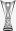
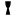
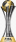
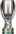
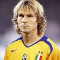
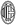
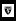

Benvenuto nel sito della Juventus
La Juventus Football Club, comunemente conosciuta come Juventus o Juve, è una società calcistica italiana con sede a Torino.
Storia
Fondata nel 1897, la Juventus è uno dei club più titolati e conosciuti al mondo. Ha una lunga e orgogliosa storia, con numerosi successi sia a livello nazionale che internazionale.
Titoli più importanti
- Serie A: 36 titoli
 Coppa Italia: 14 titoli
Coppa Italia: 14 titoli- Champions League: 2 titoli
-  Europa League: 3 titoli
-  Supercoppa italiana: 9 titoli
-  Coppa Intercontinentale: 2 titoli
-  Supercoppa UEFA: 2 titoli
Giocatori Famosi
Nel corso degli anni, molti grandi giocatori hanno indossato la maglia bianconera, tra cui:
- Alessandro Del Piero
- Michel Platini
- Roberto Baggio
- Pavel Nedvěd
 Cristiano Ronaldo
Cristiano Ronaldo
Rivalità
La Juventus ha storicamente rivalità con altre squadre italiane, tra cui:
- Inter Milan (Derby d'Italia)
- AC Milan
- Torino FC (Derby della Mole)
Ultimi Risultati
| Anno | Competizione | Risultato |
|---|---|---|
| 1905 | Serie A | Vincitore |
| 1926 | Serie A | Vincitore |
| 1931 | Serie A | Vincitore |
| 1932 | Serie A | Vincitore |
| 1933 | Serie A | Vincitore |
| 1942 | Serie A | Vincitore |
| 1958 | Serie A | Vincitore |
| 1960 | Coppa Italia | Vincitore |
| 1979 | Coppa Italia | Vincitore |
| 1983 | Coppa UEFA | Vincitore |
| 1990 | Coppa Italia | Vincitore |
| 1997 | Serie A | Vincitore |
| 1998 | Serie A | Vincitore |
| 2002 | Serie A | Vincitore |
| 2003 | Serie A | Vincitore |
| 2004 | Coppa Italia | Vincitore |
| 2015 | Coppa Italia | Vincitore |
| 2016 | Coppa Italia | Vincitore |
| 2017 | Coppa Italia | Vincitore |
| 2018 | Serie A | Vincitore |
| 2020 | Serie A | 1° posto |
| 2021 | Coppa Italia | Vincitore |
| 2021 | Supercoppa Italiana | Vincitore |
| 2022 | Serie A | 4° posto |
| 2022 | Coppa Italia | Vincitore |
| 2022 | Supercoppa Italiana | Vincitore |
| 2023 | Serie A | 3° posto |
| 2023 | Coppa Italia | Finalista |
| 2023 | Europa League | Semifinale |
| 2024 | Serie A | In corso |